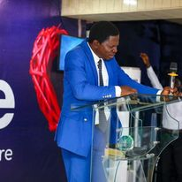
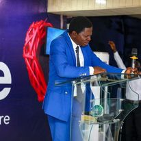

About Us
The Foursquare Gospel Church, Oniriti, Agape Mission Center, is dedicated to spreading the message of Jesus Christ as the Savior, Healer, Baptizer, and the Soon Coming King. At our church, we emphasize the importance of:
- Preaching Jesus: We are committed to proclaiming the transformative power of Jesus Christ and His teachings.
- Love: Love is our guiding principle. We not only preach about love but also strive to manifest it in our actions toward one another and the community. This is our home of love.
- Community: We foster a sense of belonging and support among our members, creating a nurturing environment for spiritual growth.
- Faith: We believe in the power of faith in Jesus Christ, encouraging our members to deepen their relationship with Him through prayer, study, and reliance on the Holy Spirit.
- Hope: Our hope is anchored in the imminent return of Jesus Christ. This hope inspires and motivates us to live lives aligned with His teachings.
- Service: We are dedicated to serving others, both within our congregation and the broader community, through outreach programs, missions, and charitable activities.
Welcome to the Foursquare Gospel Church, Oniriti, Agape Mission Center, where faith, love, and service unite to create a vibrant community centered on Jesus Christ.
Worship Services
Join us for our worship services throughout the week:
-
Tuesday: Bible Study (6:30pm - 8:00pm)
This is when we dive deep into the Word of God as we study and discuss its teachings. -
Friday: Prayer Meeting
We come together for a time of prayer and reflection to start the week off right. -
Sunday: Empowerment Service (8:00am)
Join us for an empowering service to start your Sunday morning. -
Sunday: Celebration Service (9:00am - 11:00am)
Join us for a dynamic worship experience as we celebrate the goodness of God and receive biblical teaching to enrich our lives.
We look forward to seeing you there!